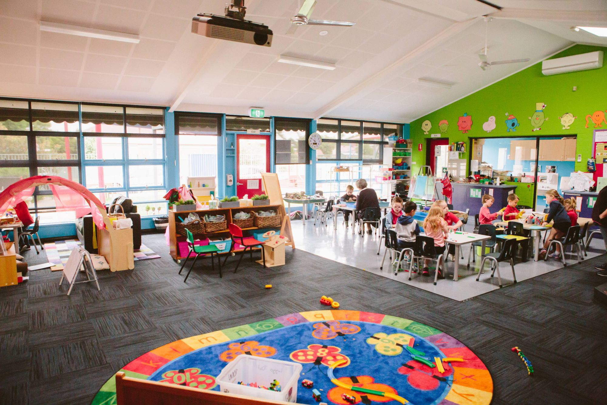
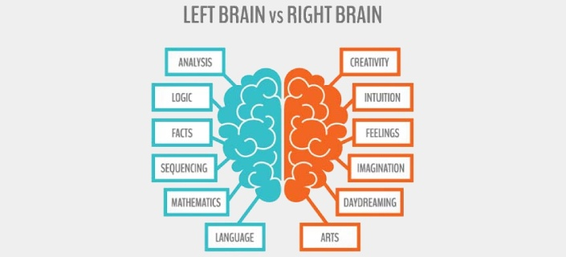

The benefits for the children to learn other languages
 Figure 1. illustrates the early childhood classroom, adapted from Greater Shepparton City Council, 2019, Retrieved from http://greatershepparton.com.au/community/childrens-services/childcare/childrens-centres/alexandra-street-kindergartenParents and early childhood educators in the English-speaking countries particularly, often have a misconception view about teaching the children a diverse language. People often assume that multi-language learning during infant-toddler stage can confuse children which slower their language abilities. However, the delay of children’s speaking abilities is a complex system, and this could be due to the words processing capacity of the toddlers where they still develop to be able to untangle the sets of grammar and vocabulary (Nemeth, 2012). The advantages of learning different languages have been suggested by many researchers as there are numerous benefits of foreign language acquisition from the early age stage. The main benefits of multi-language acquisition and exposure to children at an early age help the promotion of healthy children’s cognitive development (Bialystok, 2006; Nemeth, 2012).
 Figure 2. illustrates the differences of function between right brain and left brain, adapted from Consumer Health Digest, 2019, Retrieved from https://www.consumerhealthdigest.com/brain-health/left-brain-right-brain-myths.htmlThe benefits of different language acquisition in early childhood
-
Improve children’s cognitive development
A bilingual child is proved to outperform the monolingual child in terms of their intelligence performance due to various aspects such as better concept formation and mental flexibility in the child who speaks more than one language which can affect children’s academic progress (Peal & Lambert, 1962). -
Encourage children to learn a different culture
Another benefit of second language acquisition is the opportunity for the children to learn a different culture through a language learning program. Learning different languages helps children to understand diverse culture which helps them to have a broader perspective and become more open-minded people. -
To support the inclusive environment in early childhood settings.
The provision of foreign language learning in early childhood settings helps to promote the inclusive environment for the children with non-English speaking background as every child has an equal opportunity to learn. The community from different or minority backgrounds also can more being feel welcomed and respected in educational settings. -
Learning a new language at an early age is easier and faster.
Many researchers suggest that learning foreign language is better to start from the early age is as the learning capability of the children is faster due to the brain development that still on the continuous development in this early age, where children’s brain proved to be more flexible compared to the adults (Thompson et al., 2000).